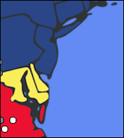
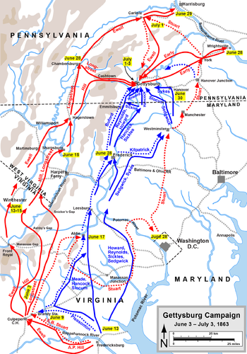
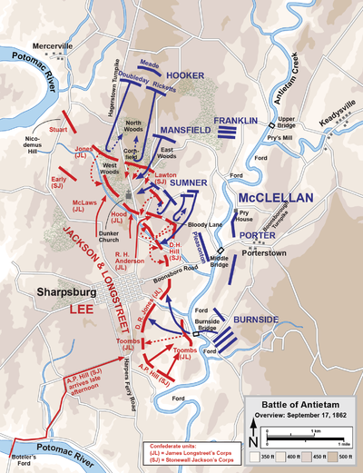
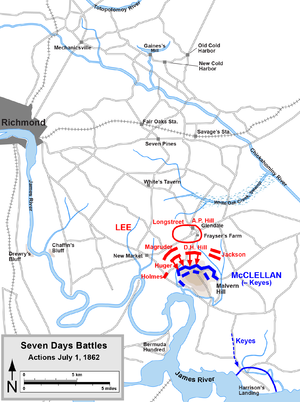
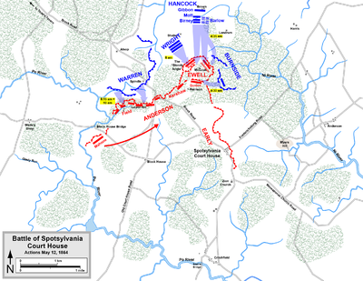
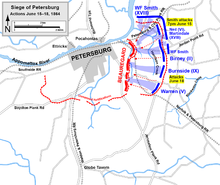

| Union | July 1-3, 1863 | Confederate |
|---|---|---|
| George G. Meade John F. Reynolds | Commanders | Robert E. Lee |
| 93,921 | Strength | 71,699 |
| 23,055 | Casualties and Losses | 23,231 |
Shortly afer the battle of Chancellorsville, Lee decided to again try to invade the North (his first attempt had ended in the battle of Antietam). It would be good in many ways: it would keep the Federal forces busy and out of Confederate territory, it would give the Confederates a chance to get close to important Northern cities, and it might even take pressure off of the garrison under siege near Vicksburg.
On July 1, the Confederate forces converged on Gettysburg from the north and the west, forcing the Union soldiers all the way back to Cemetery Hill. The next night, reinforcements arrived for both sides. Lee attacked both the left and right flank, and for the next two days, the Federals controlled Gettysburg. On July 3, Picket's Charge plunged deep into the Union ranks, and later the cavalry tried to attack from the rear, but the Confederate forces were turned back by the large number of casualties. On July 4, Lee withdrew his forces along the Potomac river.
On November 19, President Lincoln honored the fallen by dedicating the Soldiers' National Cemetery with his historic Gettysburg Address. This historic speech helped redefine the purpose of the war.

| Union | September 17, 1862 | Confederate |
|---|---|---|
| George B. McClellan | Commanders | Robert E. Lee |
| 75,500 | Strength | 38,000 |
| 12,401 | Casualties and Losses | 10,316 |
On September 3, 1862, Lee's army entered Maryland. The Maryland invasion was meant to happen a the same time that another group of Confederates were invading Kentucky. While McClellan's army was marching to intercept Lee's, two of his soldiers discovered a set of plans wrapped around some cigars. Lee's plans, to be precise. McClellan knew that if he acted quickly, he could beat the Confederates to their two targets: Harper;s Ferry, West Virginia, and Hagerstown, Maryland.
On September 16, McClellan and his troops confronted the Confederates in Sharpsburg, Maryland. At dawn the next day, the Union troops attacked the Confederate left flank, starting the single bloodiest day in all the Civil War. Fighting raged around the town, until eventually the Federals pierced the Confederate center, though they were quickly forced out. Late in the day, more Unio corps arrived, heading straight for the Confederates' right. Fortunately, Confederate backup arrived just in time to fight the new troops off. Both sides took the night to consolidate their lines.
Although out numbered two to one, Lee sent in all of his troops, while McClellan sent in only about 75%. This enabled Lee to create a stalemate and get enough time to flee with his forces across the Potomac.

| Union | July 1, 1862 | Confederate |
|---|---|---|
| Abraham Lincoln George B. McClellan Fitz John Porter | Commanders | Jefferson Davis Robert E. Lee |
54,000-80,000 3 ships 37 batteries | Strength | 55,000-80,000 10 batteries |
| 3,000 | Casualties and Losses | 5,650 |
McClellan's goal was to take Richmond, Virginia, the Confederate capital. He had an ambitious plan: to sail his army around the Confederates and right into the Virginia peninsula. In the spring of 1862, the Federal soldiers sailed into Virginia; and for several months, nothing happened. Finally, on May 30, McClellan began moving his soldiers across the Chickahominy River, the only thing in between the army and Richmond. However, for the next month, there would be many minor battles between the Confederates and the Federals. Finally, on June 30, McClellan's forces stood atop Malvern Hill, awaiting battle.
On July 1, Lee sent a series of attacks upon Malvern Hill, but to no avail. The Unions remained on the hill, while Lee lost nearly 5,300 soldiers. Still, the Union soldiers retreated to Harrison's landing, where they were protected by gunboats.

| Union | May 8-21, 1864 | Confederate |
|---|---|---|
| Ulysses S. Grant George G. Meade | Commanders | Robert E. Lee |
| 100,000 | Strength | 52,000 |
| 18,399 | Casualties and Losses | 12,687 |
In March 1864, Grant was given command of all Union armies. He and Lincoln planned a carefully coordinated strategy to attack the Confederates in many places at once. This was the first time that the Federals had a coordinated offensive strategy across multiple battles. The objective was not to capture Richmond, but actually to destroy Lee's army. This had been Lincoln's general plan for some time. On May 5, after Grant's army had crossed into the Wilderness of Spotsylvania, they were attacked by Lee's army. Neither side gained the advantage, despite two days of fighting and nearly 30,000 casualties. Grant ordered Meade to move the troops around the Confederates' right flank and to take over the nearby Spotsylvania Courthouse. He hoped that, by putting his troops in between Lee's and Richmond, the Confederates would have no choice but to fight on unfavorable terrain.
For two weeks, Spotsylvania was home to a myriad of small battles. On May 12/13, the Union soldiers captured nearly 20,000 Confederate soldiers. On May 19, the Rebels attempted to turn the Union right flank, defeated with many casualties. On May 21, Grant and his soldiers left the battle and continued on to Richmond, all the while attacking and being attacked by Lee's army, following parallel. There were many more minor battles before their next major fight, the Siege of Petersburg.

| Union | June 15, 1864-18, 1864 | Confederate |
|---|---|---|
| Ulysses S. Grant George G. Meade | Commanders | Robert E. Lee P.G.T. Beauregard |
| 13,700-62,000 | Strength | 5,400-38,000 |
| 11,386 | Casualties and Losses | 4,000 |
After the battle of Spotsylvania, Grant changed his focus from defeating Lee's army to taking the city of Petersburg, a crucial rail junction in delivering supplies to the Confederate capital, Richmond. Grant knew that if Petersburg fell, Lee would have no other option but to challenge the Federals in the option. Grant also knew, thanks to the First Battle of Petersburg on June 9, how weak the defenses were. The main Confederate advantage was the Dimmock Line, over ten miles of artillery connected by trenches and underground tunnels.
On June 15, the Federals crossed the Appomattox River to attack the Petersburg defenses. Beauregard's first line was forced back to Harrison Creek. On June 16 and 17, the Federals gained more and more ground. Three corps were sent in to attack on June 18, but Lee sent in reinforcements and they were driven back, sustaining heavy losses. At this point there were too many soldiers in Petersburg for it to be as easy to take over as Grant had thought.
While Grant lost the opportunity to easily take Petersburg, he did get the chance to lay siege to the city, which lasted until April 9, 1865.
